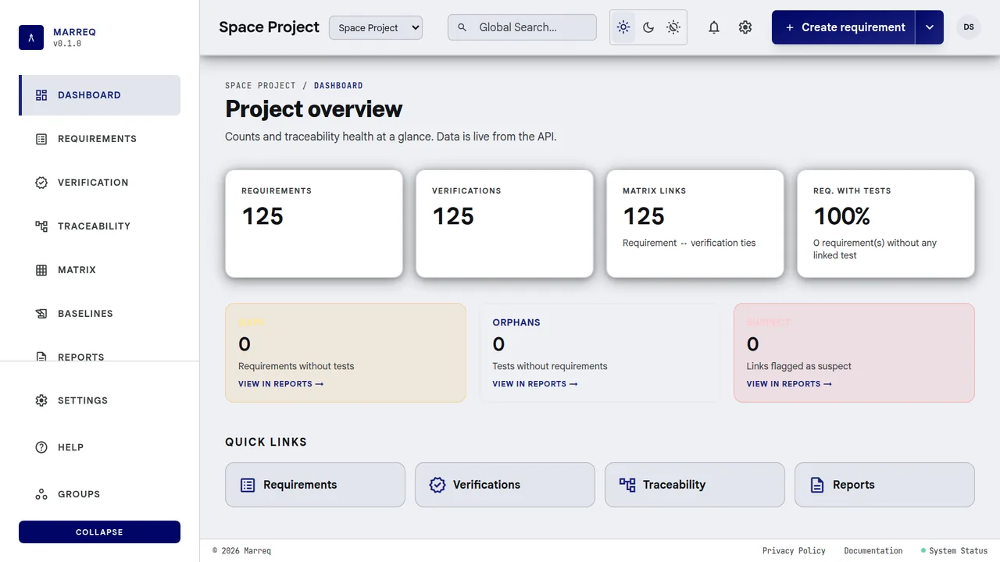
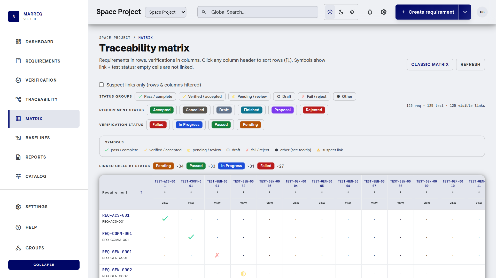

Open
Marreq is AGPL-3.0 licensed and self-hostable. Inspect the code, operate it on your infrastructure, and contribute improvements.
- AGPL-3.0
- Self-hosted
- Rust
- PostgreSQL
- React
01 Open source requirements engineering
Structure requirements, connect verification, approve revisions, and freeze trustworthy baselines in one open platform.

02 Requirements
Organize requirements hierarchically, review changes in context, and preserve the versions behind every approval. Comments and project roles keep decisions attached to the engineering record.
Power system / Energy storage
The battery system shall provide sufficient usable capacity to support nominal operation through the defined mission cycle.
Conceptual product representation — not live project data.
03 Traceability
Connect requirements to verification and see gaps, coverage, and suspect links as the design changes.

REQ-042VER-014coveredREQ-043VER-019suspectRequirement versions and traceability state captured together.
Conceptual product representation — not live project data.
04 Baselines
An immutable baseline records the exact requirement versions and traceability state at a point in time. Compare it with current work or export the captured state as ReqIF.
05 Product experience
Real application views for managing the engineering record. Open any screen for a closer look.
06 Open platform
Open
Marreq is AGPL-3.0 licensed and self-hostable. Inspect the code, operate it on your infrastructure, and contribute improvements.
Connected
07 Developers
Run Marreq, integrate the API, or inspect the architecture. The complete documentation remains in the repository.
Docker Compose starts PostgreSQL; Rust runs the API; Node.js 20 serves the SPA.
docker compose -f docker/docker-compose.yml up -d db
./marreq-core/scripts/db_setup.sh --seed
cargo run -p marreq-server
cd frontend && npm install && npm run devWork with hierarchy, approvals, verification, matrices, baselines, project authorization, and exchange formats.
JSON under /api, with session authentication for the browser and Bearer tokens for headless clients.
curl -s http://127.0.0.1:8000/api/auth/me
curl -s http://127.0.0.1:8000/api/projectsRust, Rocket, Diesel and PostgreSQL behind a React 19 and TypeScript interface.
08 Open-source project
Bring disciplined requirements and verification management to your engineering work—on the hosted application or your own infrastructure.
Project enquiries
contact@marreq.comQuestions, feedback, deployments, integrations.Sponsorship
sponsorship@marreq.comSupport infrastructure, documentation, and development.